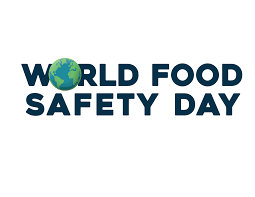

Food Security
Food Safety is very important it might save you life

Keep Food Safe! Food Safety Basics
Safe steps in food handling, cooking, and storage are essential in preventing foodborne illness. You can't see, smell, or taste harmful bacteria that may cause illness. In every step of food preparation, follow the four guidelines to keep food safe:
Clean—Wash hands and surfaces often.
Separate—Don't cross-contaminate.
Cook—Cook to proper temperatures, checking with a food thermometer.
Chill—Refrigerate promptly.
Shopping
Purchase refrigerated or frozen items after selecting your nonperishables.
Never choose meat or poultry in packaging that is torn or leaking.
Do not buy food past "Sell-By," "Use-By," or other expiration dates.
Storage
Always refrigerate perishable food within 2 hours (1 hour when the temperature is above 90 °F).
Check the temperature of your refrigerator and freezer with an appliance thermometer. The refrigerator should be at 40 °F or below and the freezer at 0 °F or below.
Cook or freeze fresh poultry, fish, ground meats, and variety meats within 2 days; other beef, veal, lamb, or pork, within 3 to 5 days.
Perishable food such as meat and poultry should be wrapped securely to maintain quality and to prevent meat juices from getting onto other food.
To maintain quality when freezing meat and poultry in its original package, wrap the package again with foil or plastic wrap that is recommended for the freezer.
In general, high-acid canned food such as tomatoes, grapefruit, and pineapple can be stored unopened on the shelf for 12 to 18 months. Low-acid canned food such as meat, poultry, fish, and most vegetables will keep 2 to 5 years-if the unopened can remains in good condition and has been stored in a cool, clean, and dry place. Discard cans that are dented, leaking, bulging, or rusted.
Thawing
Refrigerator—The refrigerator allows slow, safe thawing. Make sure thawing meat and poultry juices do not drip onto other food.
Cold Water—For faster thawing, place food in a leak-proof plastic bag. Submerge in cold tap water. Change the water every 30 minutes. Cook immediately after thawing.
Microwave—Cook meat and poultry immediately after microwave thawing.
Preparation
Always wash hands with soap and warm water for 20 seconds before and after handling food.
Don't cross-contaminate. Keep raw meat, poultry, fish, and their juices away from other food. After cutting raw meats, wash cutting board, knife, and counter tops with hot, soapy water.
Marinate meat and poultry in a covered dish in the refrigerator.
Sanitize cutting boards by using a solution of 1 tablespoon of unscented, liquid chlorine bleach in 1 gallon of water.
Cooking
Cook all raw beef, pork, lamb and veal steaks, chops, and roasts to a minimum internal temperature of 145 °F as measured with a food thermometer before removing meat from the heat source. For safety and quality, allow meat to rest for at least three minutes before carving or consuming. For reasons of personal preference, consumers may choose to cook meat to higher temperatures.
Ground meats: Cook all raw ground beef, pork, lamb, and veal to an internal temperature of 160 °F as measured with a food thermometer.
Poultry: Cook all poultry to an internal temperature of 165 °F as measured with a food thermometer.